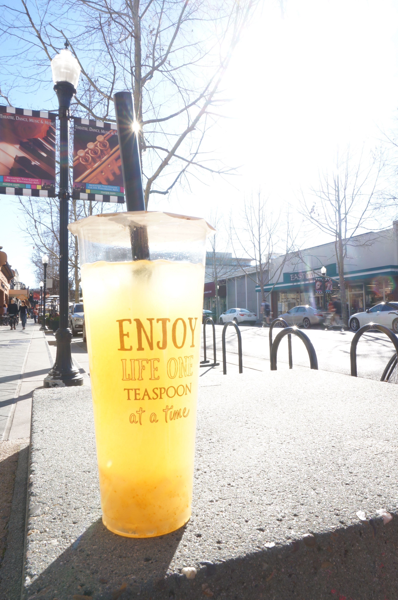
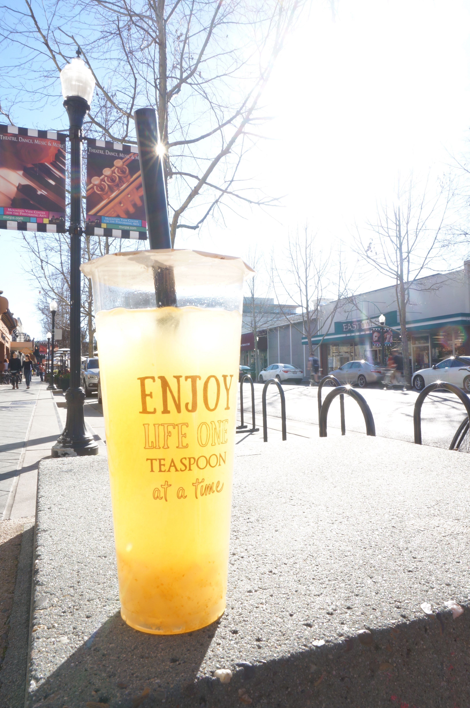

The topic of this page is sidewalk, the easiest thing we can ignore and pass by.However, the road will not be connected without sidewalk, just like our life is connected with millions 'sidewalks', they are actions, moments, impressions, decisions, and such on little pieces.
The most important thing I learned from this trip is 'missed' and 'missing'. We have missed and always missing views in our life-long journey--because we are busy. We are busy with million things, but we are also easily forgetting what is truely important in our life.
Sometimes, we can take a break and relax a little bit. As if we will finally solve all the challenges, as if we will keep all the happiness in our memory and forget the wrost ones. We can be with ourselves, or spend sometime with the people you love, enjoy a weekend at a place like mountain view, and take a moment to look, what`s the good things are surrounding you, connceting your life like sidewalk does for connecting the city.
 
